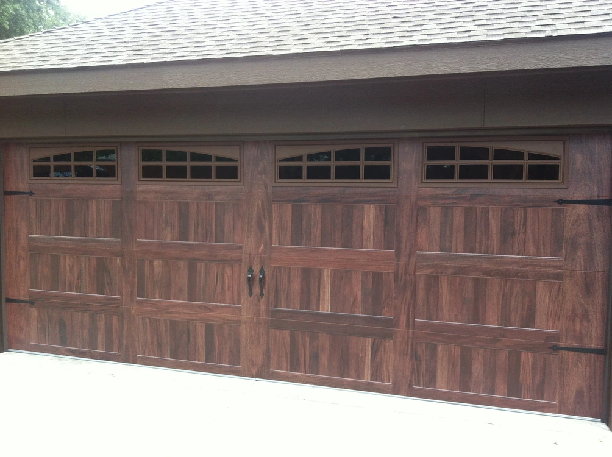
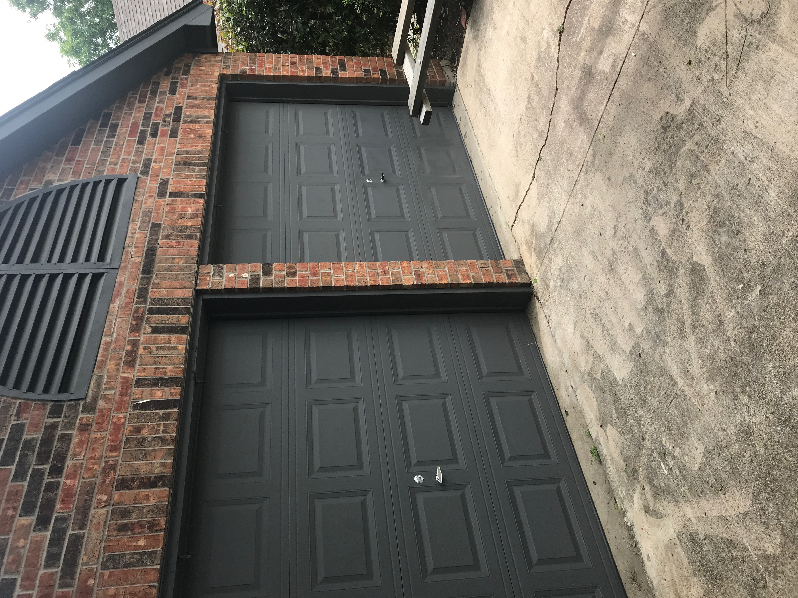
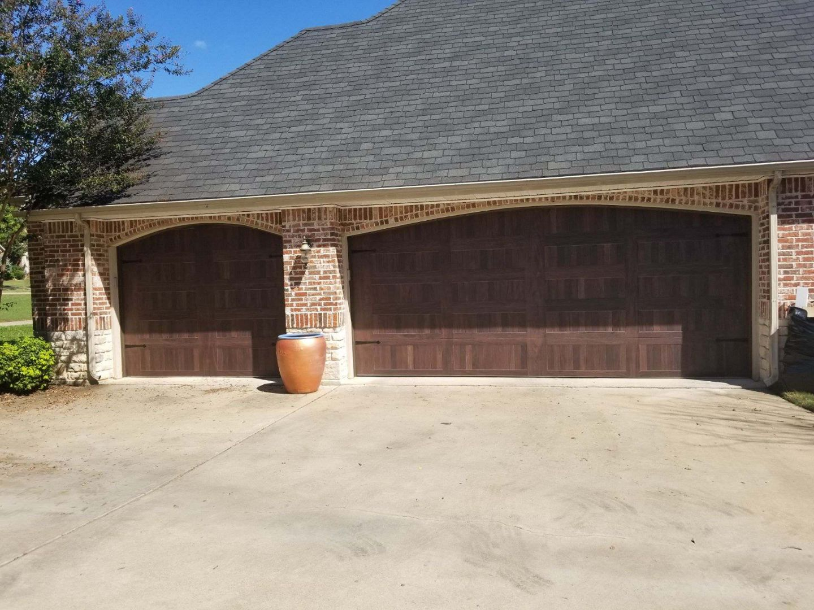
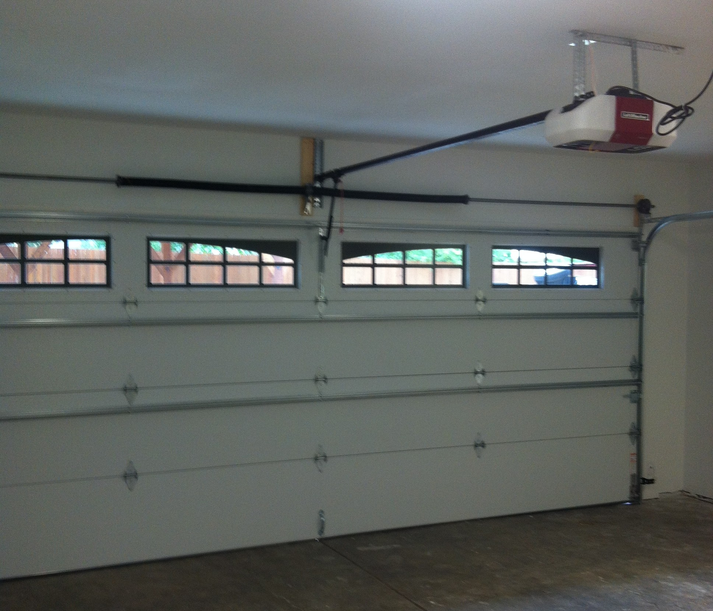

Garage Door Repair
Troubleshooting and repair for doors that are stuck, noisy, uneven, damaged, misaligned, or not operating correctly.
Residential Garage Door Service
David's Overhead Door provides residential garage door repair, replacement, installation, opener service, troubleshooting, and maintenance throughout Irving and the Dallas-Fort Worth area.

Residential Services
Residential garage door systems rely on multiple mechanical and electrical components working together. David's Overhead Door services many common garage door, opener, track, spring, cable, roller, and hardware issues.
Troubleshooting and repair for doors that are stuck, noisy, uneven, damaged, misaligned, or not operating correctly.
Installation and replacement of residential garage doors when an existing system is damaged, worn, outdated, or being upgraded.
Opener troubleshooting, service, replacement, and installation for many common residential systems.
Service and replacement of worn, damaged, or failed spring and cable components.
Adjustment and repair of damaged, worn, bent, or misaligned tracks and rollers.
Replacement and adjustment of hinges, brackets, fasteners, rollers, seals, and related garage door hardware.
Garage Door Problems
A garage door that is difficult to operate, becomes unusually noisy, sits unevenly, or stops opening and closing properly may have one or more mechanical or opener-related problems.
David's Overhead Door evaluates the door system and identifies the cause before recommending repairs or replacement.


Garage Door Installation
When repair is no longer practical or you want to update the appearance and operation of your garage door, David's Overhead Door can assist with replacement and installation.
Door selection depends on the opening, existing hardware, operating requirements, appearance, and other project conditions.
Garage Door Openers
David has experience working with garage door openers and related controls from multiple manufacturers. Service may include troubleshooting, adjustment, component replacement, or complete opener replacement depending on the condition of the system.

Multi-Brand Experience
David has experience installing, repairing, and troubleshooting garage doors, openers, hardware, and related equipment from numerous manufacturers.
That broad experience helps David's Overhead Door service many different existing residential systems without limiting work to a single manufacturer.
Residential Service Area
David's Overhead Door is based in Irving, Texas and provides mobile residential garage door service throughout Dallas-Fort Worth and surrounding communities.
Need Residential Garage Door Service?
Call or schedule service for garage door repairs, replacement, installation, opener service, troubleshooting, or estimates.